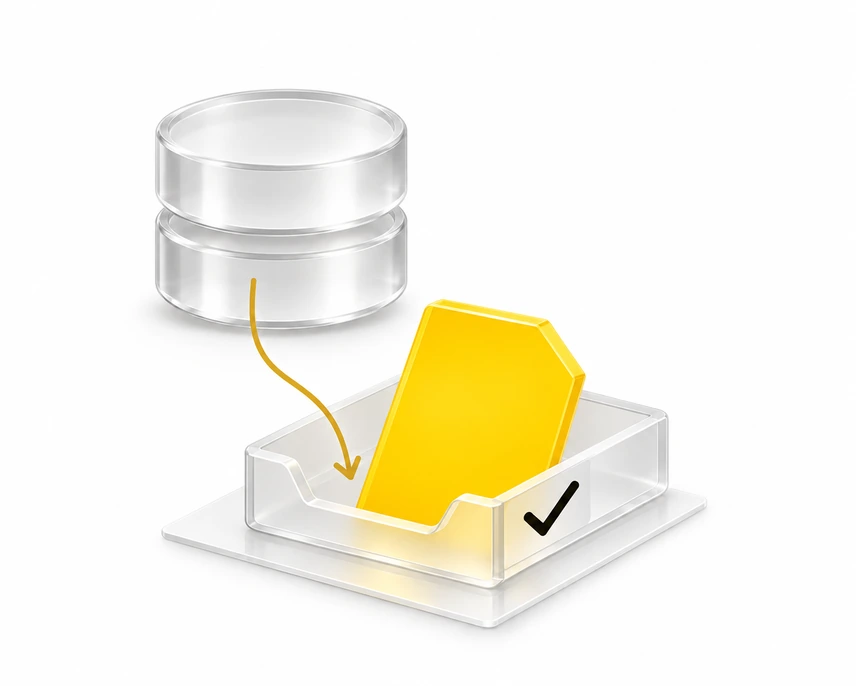

Ihre Prozesse müssen die S/4HANA-Umstellung überstehen. Und jedes Release danach.
andagon sichert Ihre Geschäftsprozesse über Systemgrenzen hinweg ab, bei der S/4HANA-Umstellung und bei jeder anderen Änderung im laufenden Betrieb.
Viele Projekte scheitern nicht an der Implementierung, sondern am Übergang in den Produktivbetrieb. Wir prüfen vorher, ob Ihre geschäftskritischen Prozesse über alle beteiligten Systeme hinweg tatsächlich funktionieren – risikobasiert, also dort, wo ein Fehler am meisten kosten würde. Mit automatisierten Tests schaffen wir zugleich die Grundlage dafür, dass diese Prozesse auch bei zukünftigen Änderungen zuverlässig funktionieren.

25+ Jahre Erfahrung
in der Softwarequalitätssicherung
9 von 10 Kunden empfehlen uns weiter
auf Basis ihrer Projekterfahrung
100 % zertifizierte Testexperten
in der SAP-Automatisierung: ISTQB und Tosca
Ihre SAP-Beratung migriert. Wer prüft?
Ob Ihre Prozesse auch nach der Migration noch zuverlässig funktionieren, zeigt sich oft erst im produktiven Betrieb.
In Migrationsprojekten wird häufig zu spät klar, dass Qualitätssicherung, Testmanagement und die Validierung geschäftskritischer Prozessketten nicht ausreichend berücksichtigt wurden. Ihre SAP-Beratung konzentriert sich auf die Umsetzung, und das soll sie auch. Eine unabhängige Prüfung schafft die notwendige zweite Perspektive: das Vier-Augen-Prinzip für Ihre Umstellung.
Genau diese Rolle nimmt andagon ein: Ihr unabhängiger Prüfpartner für SAP-Umstellungen und -Änderungen.
Jedes System funktioniert. Der Prozess trotzdem nicht.
In SAP-Projekten wird häufig auf Ebene einzelner Systeme, Module und Schnittstellen getestet. Entscheidend ist jedoch, ob der gesamte Geschäftsprozess funktioniert — über SAP, Cloud-Dienste und Drittsysteme hinweg.
Die Probleme treten oft erst im Tagesgeschäft auf: Daten kommen nicht korrekt an, Belege fehlen im Folgesystem oder wichtige Prozessschritte werden nicht ausgelöst. Was zunächst wie ein kleines Schnittstellenproblem aussieht, kann Abläufe verzögern, manuelle Nacharbeit verursachen und im schlimmsten Fall den gesamten Geschäftsprozess zum Stillstand bringen.
Ein Fall aus der Praxis
Bei der Einführung einer neuen Kassenlösung in einem Handelsunternehmen mit über 13.000 Filialen wurden Verkäufe korrekt von der Kasse nach SAP übertragen, die Schnittstelle war getestet, abgenommen und funktionierte.
Was allerdings niemand geprüft hatte, war der umgekehrte Weg. Retouren und Rückerstattungen waren vom Integrationsumfang ausdrücklich ausgenommen.
Im Produktivbetrieb hätte das bedeutet: Ein Kunde gibt einen Artikel zurück, das Personal erfasst die Retoure an der Kasse und zahlt den Betrag aus. Für den Kunden und für das Kassensystem ist der Vorgang abgeschlossen. In SAP passiert jedoch nichts.
Die Konsequenz: Das Geld ist ausgezahlt, aber die Gegenbuchung fehlt. Die Ware steht wieder im Regal, aber nicht im Bestand. Der Tagesabschluss zwischen Kasse und SAP geht nicht auf, und jede Filiale beginnt, Differenzen von Hand nachzuarbeiten.
andagon entdeckte die Lücke in der Testphase, weil wir nicht allein die Verkaufsschnittstelle geprüft haben, sondern den Geschäftsprozess „Retoure" – vom Kassenbon bis zur Buchhaltung. Hier hätte kein Modultest angeschlagen. Die Verkaufsschnittstelle war korrekt. Der Prozess war trotzdem unvollständig.
Deshalb testen wir nicht nur einzelne Schnittstellen, sondern den gesamten Prozess, egal welche Technik dahintersteckt.
Vor dem Go-Live: eine belastbare Grundlage für Ihre Freigabe
Der Go-Live ist nur so sicher wie die Grundlage, auf der er freigegeben wird.
Unsere Leistungen
- Validierung geschäftskritischer End-to-End-Prozesse über Bereichs- und Systemgrenzen hinweg
- Prüfung der Daten- und Prozessflüsse zwischen SAP- und Drittsystemen
- Absicherung von Schnittstellen, ob API, IDoc oder ereignisbasiert
- Identifikation von Fehlern an System-, Schnittstellen- und Prozessübergängen
- Durchführung oder Begleitung von Integrations-, System- und Abnahmetests
- Risikobasierte Bewertung der Prozessqualität vor der Produktivsetzung
- Klare Empfehlung für Ihre Go-Live-Entscheidung
Sie erhalten
- Klarheit, welche Prozesse stabil laufen und wo noch Risiken liegen
- Risikobewertung vor der Produktivsetzung
- Eine eindeutige Go/No-Go-Empfehlung
Besonders sinnvoll, wenn
- Geschäftskritische Prozesse über mehrere Systeme hinweg betroffen sind
- Im Projekt kein eigenes QA-Team für systemübergreifende Tests zur Verfügung steht
- Der Go-Live-Termin verbindlich ist und wenig Spielraum für zusätzliche manuelle Tests bleibt
Im laufenden Betrieb: Nach jedem Release wissen, dass alles noch läuft
Was vor dem Go-Live geprüft wurde, sollte dauerhaft durch automatisierte Tests abgesichert werden. Die SAP-Testautomatisierung lohnt sich nicht nur in Migrationsprojekten: Auch im laufenden Betrieb wird so jedes Release, jedes Update und jede Änderung abgesichert.
Unsere Leistungen
- Aufbau automatisierter Regressionstests für geschäftskritische Prozesse
- Einsatz von Tricentis Tosca und weiteren Automatisierungswerkzeugen
- Integration automatisierter Tests in Release- und Delivery-Prozesse
- Absicherung von Releases, Updates und Prozessänderungen
- Pflege und Weiterentwicklung bestehender Testautomatisierung
- Kontinuierliche Bewertung von Qualitätsrisiken nach Änderungen
- Automatisierte Qualitätskennzahlen für Release-Entscheidungen
Sie erhalten
- Schnelle Rückmeldung zur Stabilität Ihrer Prozesse nach Änderungen
- Eine Sammlung automatisierter Testfälle für Ihre geschäftskritischen Prozesse
- Deutlich weniger Testaufwand nach jedem Release
Besonders sinnvoll, wenn
- Keine oder nur teilweise Testautomatisierung vorhanden ist
- Fachanwender das Testen neben dem Tagesgeschäft übernehmen
- Der Testaufwand die verfügbaren Zeitfenster übersteigt
SAP liefert mindestens drei Updates pro Jahr und empfiehlt ausdrücklich, die bestehenden Geschäftsprozesse nach jedem Update zu testen. Dazu kommen regelmäßige Updates aller angebundenen Systeme. Die Veränderungen enden also nicht mit dem Go-Live, sondern werden zur Daueraufgabe.
Die Clean-Core-Strategie verstärkt diese Entwicklung zusätzlich: Um den SAP-Kern möglichst unverändert zu halten, werden individuelle Erweiterungen zunehmend auf Plattformen wie der SAP BTP umgesetzt. Die Zahl der Schnittstellen und Integrationen nimmt dadurch zu – und damit auch die Zahl möglicher Fehlerquellen.
Umso wichtiger ist eine gut abgestimmte Testautomatisierung. Sie ermöglicht es, geschäftskritische Prozesse nach Änderungen regelmäßig, zuverlässig und mit vertretbarem Aufwand zu überprüfen.
Dank der Automatisierung sparen wir pro Testphase eine sehr hohe Stundenzahl ein. Unsere Tester können die gewonnene Zeit jetzt nutzen, um sich intensiver mit Neuentwicklungen zu befassen.
Testautomatisierung mit Tricentis Tosca
Tricentis ist offizieller SAP-Partner für Testautomatisierung. Viele SAP-Kunden verfügen daher bereits im Rahmen des SAP Enterprise Support über eine Tricentis-Lizenz. Als zertifizierte Tosca-Experten unterstützen wir Sie dabei, dieses Potenzial für eine leistungsfähige Testautomatisierung zu nutzen.
Zertifizierte Tosca-Experten
Unsere zertifizierten Tosca-Experten bringen das notwendige Know-how in Ihre Projekte ein.
Regional Premium Delivery Partner
Als Regional Premium Delivery Partner von Tricentis unterstützen wir Unternehmen seit Jahren beim Aufbau und der Weiterentwicklung ihrer Testautomatisierung.
Lizenzen aus einer Hand
Falls Sie noch keine Tricentis-Lizenz haben oder zusätzliche benötigen, beziehen Sie sie ohne Mehrkosten über andagon.
Die eingebrachten Konzepte und Entwicklungen haben maßgeblich zur Verbesserung der Testabdeckung und zur nachhaltigen Wartbarkeit unserer Testinfrastruktur beigetragen.
Neben Tricentis Tosca arbeiten wir mit allen gängigen Testautomatisierungslösungen und nutzen die Tools, die bereits bei Ihnen etabliert sind, statt neue Werkzeuge einzuführen.
Prüfliste: Wie gut sind Ihre SAP-Prozesse abgesichert?
Zwölf Fragen, die für die Absicherung Ihrer SAP-Prozesse entscheidend sind. Wo Sie heute zögern, entstehen morgen häufig Risiken im Betrieb. Die Prüfliste mit 12 praxisnahen Fragen erhalten Sie direkt per E-Mail, ohne Beratungsgespräch.
Warum andagon
25+ Jahre Erfahrung
Seit über 25 Jahren prüfen wir Software auf Qualität. Das ist unser Kerngeschäft.
Wir sagen, was zu tun ist
Wir liefern nicht nur eine Analyse, sondern konkrete, machbare Schritte.
120+ Fachleute
In Köln und Hamburg – genug Kapazität für Ihr Projekt.
Die Automatisierung von rund 80 SAP-ERP-Transaktionen ermöglichte die Identifikation kritischer Performanceprobleme vor dem Rollout und unterstützte deren erfolgreiche Behebung.
Häufige Fragen
Was kostet die Qualitätssicherung meiner SAP-Landschaft?
Das hängt vom Umfang Ihrer Prozesslandschaft und vom Automatisierungsaufwand Ihrer Testfälle ab. Für ein Festpreisangebot starten wir mit einem Proof of Concept: Wir automatisieren einige repräsentative Testfälle aus Ihrem System – einfache, mittlere und komplexe – und messen den tatsächlichen Aufwand. Auf dieser Grundlage kalkulieren wir den Festpreis für den Gesamtumfang. Alternativ arbeiten wir jederzeit nach Aufwand, zum Beispiel wenn sich der Umfang noch verändert oder Sie flexibel starten möchten.
Wann sollte das Testen bei einer SAP-Transformation beginnen?
Das Testen ist kein Projektschritt kurz vor dem Go-Live, sondern ein kontinuierlicher Prozess, der die S/4HANA-Umstellung von Beginn an begleiten sollte. Dabei reicht es nicht aus, einzelne Module zu prüfen. Auch Testdaten, Schnittstellen, Geschäftsprozesse und End-to-End-Workflows müssen frühzeitig berücksichtigt und abgesichert werden.
Wann lohnt sich der Aufbau einer Testautomatisierung?
Eine Testautomatisierung lohnt sich insbesondere dann, wenn geschäftskritische Prozesse regelmäßig von Releases, Updates oder neuen Integrationen betroffen sind. Da SAP-Systeme eng mit ihrer Systemlandschaft verzahnt sind, kann bereits eine kleine Änderung zu Fehlern in nachgelagerten Prozessen führen. Eine automatisierte Regressionssuite erkennt solche Auswirkungen früh und senkt den Aufwand für wiederkehrende Tests dauerhaft.
Wie viel Zeit kostet das unsere Fachabteilung?
Weniger als heute. Ihre Fachexperten brauchen wir für das, was nur sie wissen: welche Abläufe geschäftskritisch sind, wie ein Prozess richtig aussieht und ob ein Ergebnis fachlich stimmt. Das Schreiben, Durchführen und Dokumentieren der Testfälle übernehmen wir. Ihre Key User kommen also vor allem bei der Abstimmung der Testfälle und bei der Abnahme dazu, nicht beim Durchklicken jedes einzelnen Tests.
Wir haben über SAP schon Tricentis-Lizenzen. Brauchen wir Sie trotzdem?
Neue Lizenzen brauchen Sie nicht, wir arbeiten mit denen, die Sie bereits haben. Eine Lizenz ist allerdings noch keine Testautomatisierung: Jemand muss die Testfälle aufbauen, an Ihre Prozesse anpassen und nach jedem Release pflegen. Das übernehmen wir. Als Regional Premium Delivery Partner von Tricentis kennen wir sowohl die über SAP bereitgestellte Variante als auch den vollen Tosca-Umfang und sagen Ihnen ehrlich, ob Ihre vorhandene Lizenz für Ihr Vorhaben ausreicht.
Wie schnell können Sie starten?
In der Regel innerhalb von zwei Wochen nach dem Erstgespräch. Wir beginnen mit einer kurzen Bestandsaufnahme: Welche Prozesse sind geschäftskritisch, was ist bereits getestet, wo liegen die größten Lücken? Bei der Testautomatisierung folgt darauf der Proof of Concept mit repräsentativen Testfällen. Wenn Ihr Go-Live kurz bevorsteht, priorisieren wir die Prozesse, bei denen ein Fehler am meisten kosten würde.
Welche Risiken werden bei SAP-Transformationen häufig unterschätzt?
Ein häufiges Risiko besteht darin, dass Qualitätssicherung und Tests zu spät beginnen oder sich auf einzelne Systeme beschränken. Geschäftskritisch sind jedoch meist die Prozesse, die über mehrere Systeme hinweg laufen. Fehler an Schnittstellen und Prozessübergängen fallen deshalb häufig erst im Produktivbetrieb auf.
Brauchen wir andagon, wenn bereits eine SAP-Beratung im Projekt ist?
Gerade dann. Ihre SAP-Beratung wird daran gemessen, dass die Lösung umgesetzt ist. Wir prüfen unabhängig davon, ob Ihr Prozess über alle Systeme hinweg funktioniert. Wir ersetzen Ihre SAP-Beratung nicht, wir ergänzen sie.
Welche Werkzeuge setzt andagon ein?
Wir arbeiten mit Tricentis Tosca und weiteren Testautomatisierungswerkzeugen und integrieren uns in Ihre bestehende Werkzeuglandschaft. Falls dort noch keine Testautomatisierung etabliert ist, unterstützen wir Sie bei Auswahl, Einführung und Betrieb einer passenden Lösung.
Warum steigt der Testbedarf durch Clean Core?
Die Clean-Core-Strategie reduziert Anpassungen am SAP-Kern, verlagert individuelle Lösungen jedoch zunehmend in externe Erweiterungen und Schnittstellen. Dadurch steigt der Testbedarf, da nicht nur der SAP-Standard, sondern auch Eigenentwicklungen, Integrationen und deren Zusammenspiel in Geschäftsprozessen geprüft werden müssen. Um die Stabilität nach Änderungen und Updates sicherzustellen, werden insbesondere Integrations- und Regressionstests wichtiger.
Ihr kostenloses Erstgespräch: 30 Minuten, konkrete Einschätzung für Ihren Fall
Sie erhalten eine ehrliche Einschätzung, wo Ihre größten Testrisiken liegen – auch wenn die Antwort lautet, dass Sie uns nicht brauchen. Per Teams oder Telefon beraten wir Sie praxisnah, transparent und ohne Vertriebsdruck.
Termin direkt buchen